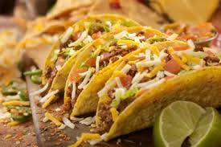

Classic Tacos

A simple lunch for a productive day, best served with a smoothie/shake of any sort
This classic taco recipe is a classic lunch that anyone can make.
These tacos can be made every day for a simple lunch that can also be customized
anyway you would like. Think of this recipe as a base recipe. If you wanted to change
anything you can add more ingredients. Take some ingredients out that you would not enjoy.
Replace some ingredients with other ingredients. Anything can be done to customize this recipe.
Ingredients
- Taco shell
- Refried beans
- First cheese (taco blend)
- Taco seasoned beef
- Salsa
- Second cheese (cheddar)
- Sour cream
- Lettuce
Steps
- Preheat oven to 325F
- Taco shells in for five minutes
- Shred cheese
- Heat refried beans in microwave
- Heat taco flavored meat in microwave
- Assemble taco as follows:
- Spread refried beans to the inside of the taco shell
- Layer with taco blend cheese
- Layer with taco flavored meat
- Layer with salsa
- Layer with sour cream
- Layer with cheddar cheese
- Heat in microwave for thirty seconds
- Layer with lettuce